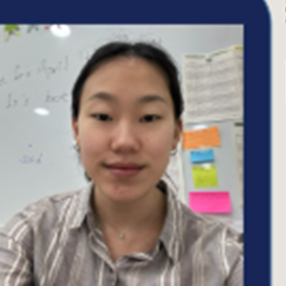
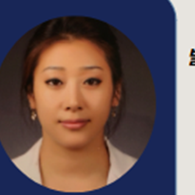

일본 도쿄에 있는 세이센(세이센 인터내셔널 스쿨, Seisen International School) 학생을 위한 1:1 과외 안내입니다. IB 과정에 맞춰 학교 과목을 영어로 읽고 쓰는 힘까지 함께 챙깁니다.
일본 도쿄의 국제학교는 학기 중에도 결원이 생기면 편입 시험을 보는 곳이 많습니다. 부모님 발령으로 갑자기 옮기게 된 경우라면 영어 읽기·에세이와 영어로 된 수학을 먼저 점검합니다. 자세한 준비 방법은 세이센 입학준비 안내에 정리했습니다.
IB 과정은 최종 시험만으로 점수가 나오지 않습니다. 과목마다 IA(내부평가)가 있고, EE(소논문)와 TOK가 따로 점수에 더해집니다. 그래서 시험 공부와 과제 마감을 한 달력에서 함께 관리합니다.
| 비교 | 한국식 학원 | 1:1 과외 |
|---|---|---|
| 진도 | 한국 교과·선행 중심 | 세이센 IB 진도 그대로 |
| 언어 | 한국어 문제집 | 학교에서 쓰는 영어 용어·문제 |
| 과제 | 봐 주기 어려움 | 루브릭 기준으로 구조·논리 점검 |
| 시간 | 정해진 시간표 | 현지 시차에 맞춰 조정 |
일본 도쿄에 있는 학생은 화상 수업으로 진행합니다. 학교 과제와 풀이를 화면에 같이 띄워 놓고 수업하고, 수업 기록이 남아 복습하기 좋습니다. 현지 시간 기준으로 학교가 끝난 뒤나 주말에 맞춥니다.
화상 선생님 가운데 일부입니다. 전체는 선생님 페이지에서 과목별로 볼 수 있습니다.
KIS·미국 유학 출신, 영어 인터뷰·회화 교정
의대 졸업·IELTS 8.0, 영어로 배우는 과학

미국 6년, 에세이·자소서·TOEFL 대비

미국 교원자격·TESOL, 발음·회화·토론
배운 개념을 영어로 1분 동안 설명해 보면 진짜 아는 것과 외운 것이 바로 갈립니다. 수업 마지막 5분은 학생이 선생님에게 설명하는 시간으로 씁니다.
돌려받은 과제의 코멘트는 읽고 끝내면 남지 않습니다. 지적받은 문단 하나만이라도 다시 써 보면 다음 과제에서 같은 감점이 줄어듭니다.
아닙니다. 세이센 인터내셔널 스쿨 학생이 쉽게 찾도록 따로 만든 안내일 뿐, 일본 도쿄의 다른 국제학교나 같은 커리큘럼(IB)을 쓰는 학교 학생도 똑같이 수업받을 수 있습니다.
일본 도쿄 현지 시간 기준으로 학교가 끝난 뒤나 주말에 맞춥니다. 상담 때 가능한 시간대를 알려 주시면 그 시간에 수업할 수 있는 선생님을 찾습니다.
학교·학년(Grade)·과목·커리큘럼을 알려 주시면 IB 과정을 가르쳐 본 선생님 가운데 2~3명을 골라 소개합니다. 첫 수업을 해 보고 맞지 않으면 다른 선생님으로 바꿔 드립니다.
학년, 과목, 일주일 수업 횟수, 수업 방식에 따라 달라집니다. 상담에서 조건을 확인한 뒤 정확한 금액을 알려 드리고, 그 전까지는 어떤 비용도 들지 않습니다.
들지 않습니다. 010-5577-3067로 전화하시거나 아래 신청서를 남겨 주시면 24시간 안에 연락드립니다.
※ 이 페이지는 국제학교튜터의 과외 안내이며 세이센 인터내셔널 스쿨의 공식 페이지가 아닙니다. 입학 자격·일정·학비는 학교 공식 안내로 확인해 주세요.